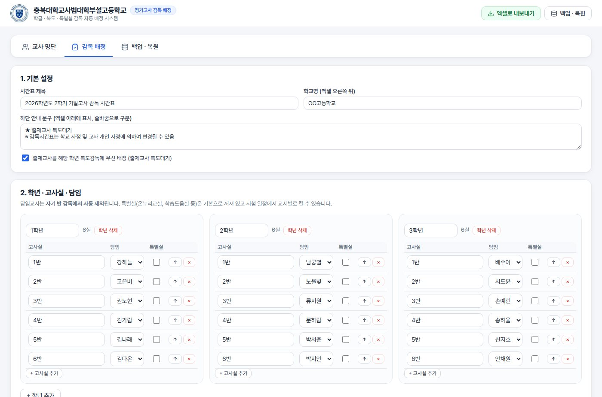
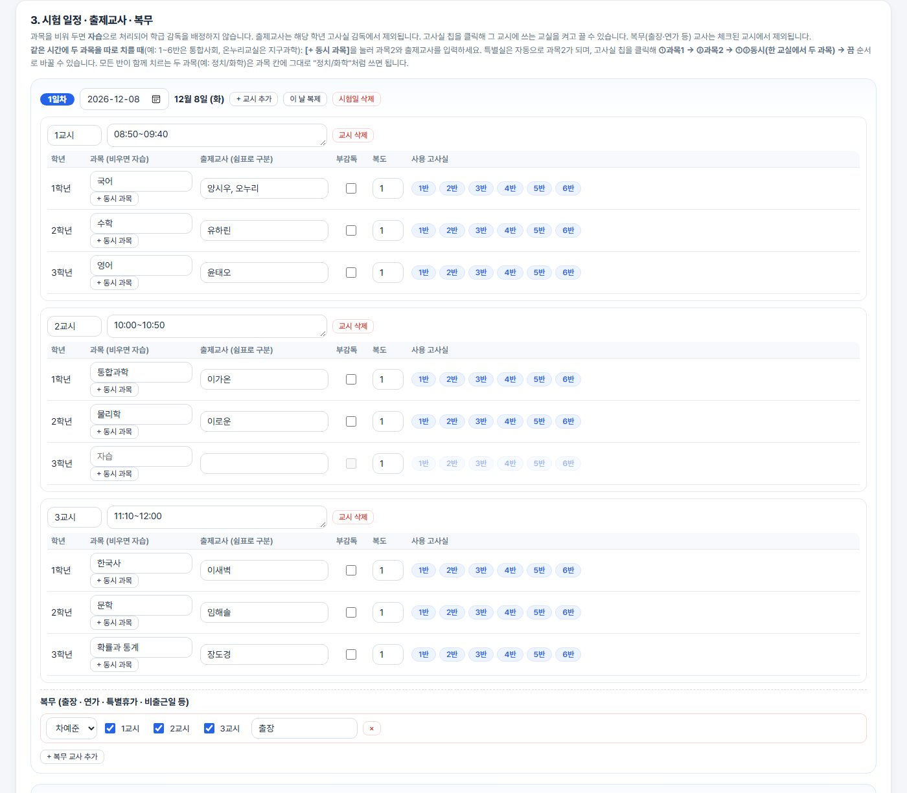
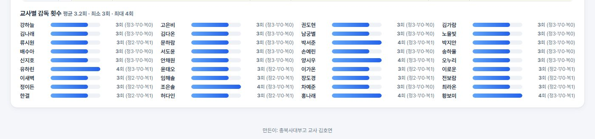

Overview
한눈에 보기
위쪽 탭 교사 명단 → 감독 배정 순서로 채우고, 자동 배정 실행 → 엑셀로 내보내기를 누르면 감독 시간표가 완성됩니다.
학급 · 복도 · 특별실
교시마다 반별 정감독, 필요하면 부감독, 학년별 복도 감독까지. 온누리교실·학습도움실 같은 특별실도 교시별로 켤 수 있어요.
자동 제외
담임은 자기 반에서, 출제교사는 그 학년 고사실에서, 복무(출장·연가) 교사는 체크한 교시에서 빠집니다.
횟수 균등 · 직접 수정
교사별 감독 횟수를 고르게 맞추고, 칸을 눌러 바꾸면 🔒 잠금되어 다시 배정해도 유지됩니다.
입력한 내용은 지금 쓰는 컴퓨터의 브라우저에 자동 저장되고 서버로 보내지 않습니다. 같은 컴퓨터·같은 브라우저에서 이어서 작업하고, 끝나면 백업 · 복원에서 파일로 저장해 두세요. 다음 시험 때 그 파일을 불러오면 명단과 고사실 설정을 다시 쓸 수 있어요.
Step 1 · 교사 명단 탭
교사 명단 등록
1
📂 엑셀 파일로 불러오기: 교원 명단 엑셀(.xlsx)이나 CSV를 고르면 "성명/이름" 열을 자동으로 찾아 넣습니다.
2
또는 이름을 줄바꿈·쉼표·탭으로 구분해 붙여 넣고 추가. 엑셀의 이름 열을 그대로 복사해도 돼요.
3
교장·교감처럼 감독을 하지 않는 분은 정기고사 감독 제외에 체크하고, 메모 칸에 "교감, 시간강사" 등을 적어 둘 수 있어요.
4
이름 변경을 쓰면 담임·출제·복무·배정 결과에 들어간 이름까지 한 번에 바뀝니다.
Step 2 · 감독 배정 탭
기본 설정 · 학년 · 고사실 · 담임

1
시간표 제목 · 학교명 · 하단 안내 문구를 적습니다. 엑셀 시간표의 제목과 아래쪽 안내에 그대로 들어가요.
2
출제교사 복도대기에 체크하면 출제교사를 해당 학년 복도 감독에 우선 배정합니다.
3
학년마다 고사실(1반~6반)을 추가·삭제·순서 변경하고 담임을 고릅니다. 담임은 자기 반 감독에서 자동으로 빠져요.
4
온누리교실·학습도움실 같은 곳은 특별실에 체크합니다. 특별실은 기본으로 꺼져 있고, 시험 일정에서 필요한 교시에만 켭니다.
Step 3
시험 일정 · 출제교사 · 복무
1
+ 시험일 추가 → 날짜를 고릅니다. 교시는 + 교시 추가로 늘리고, 비슷한 날은 이 날 복제로 빠르게 만들어요.
2
교시마다 시간(예비령·준비령·시험시간)을 적고, 학년별로 과목과 출제교사(쉼표로 구분)를 넣습니다. 과목을 비워 두면 자습으로 처리되어 학급 감독을 배정하지 않아요.
3
부감독이 필요한 과목은 체크, 복도 감독 인원은 숫자로 정합니다. 사용 고사실 칩을 눌러 그 교시에 쓰는 교실을 켜고 끕니다.
4
같은 시간에 반마다 다른 과목을 치르면(예: 1~6반 통합사회, 특별실 지구과학) + 동시 과목으로 과목2와 출제교사를 넣고, 고사실 칩을 눌러 ①과목1 → ②과목2 → ①②동시 → 끔 순서로 바꿉니다.
5
복무(출장·연가·특별휴가·비출근일 등)는 + 복무 교사 추가로 선생님과 교시를 체크합니다. 체크한 교시에서는 감독을 맡지 않아요.

Step 4
자동 배정 · 결과 고치기
1
자동 배정 실행을 누르면 모든 시험일·교시가 채워집니다. 위쪽 초록 상자에 감독 칸 수, 감독 가능 교사 수, 1인 평균 횟수가 나와요. 입력이 빠진 곳이 있으면 경고로 알려 줍니다.
2
바꾸고 싶은 칸을 누르면 감독 횟수가 적은 순으로 선생님 목록이 나옵니다. 같은 교시에 이미 배정된 선생님을 고르면 두 칸이 서로 맞바뀌어요.
3
직접 바꾼 칸은 🔒 잠금되어 다시 자동 배정해도 그대로 유지됩니다. 잠금 모두 해제로 풀 수 있어요.
4
맨 아래 교사별 감독 횟수 막대그래프로 평균·최소·최대를 확인합니다.

Step 5
엑셀로 내보내기 · 백업
📥 엑셀로 내보내기
오른쪽 위 엑셀로 내보내기를 누르면 제목·학교명·안내 문구가 들어간 감독 시간표가 .xlsx로 저장됩니다. 인쇄하거나 메신저로 공지하세요. (인터넷 연결 필요)
💾 백업 · 복원
작업 내용은 이 브라우저에만 저장됩니다. 다른 컴퓨터에서 이어 하거나 다음 시험에 다시 쓰려면 백업 파일을 저장해 두고 불러오세요.
학교 PC에서 따로 쓰고 싶다면 전체 파일(zip)을 받아 압축을 풀고 index.html을 열면 됩니다.
배정 규칙 정리
| 담임 | 자기 반 고사실 감독에서 제외 |
| 출제교사 | 해당 교시 그 학년 고사실 감독에서 제외 (동시 과목이면 두 과목 출제교사 모두). 옵션을 켜면 해당 학년 복도 감독에 우선 배정 |
| 복무 교사 | 체크한 교시에서 제외 |
| 감독 제외 교사 | 교사 명단에서 체크한 분(교장·교감 등)은 배정하지 않음 |
| 자습 | 과목을 비운 학년·교시는 학급 감독을 배정하지 않음 |
| 잠금 칸 | 직접 고친 칸은 다시 자동 배정해도 유지 |
만든이
충북사대부고 지구과학 교사 김호연
야간자율학습 감독 배정 프로그램도 함께 쓰실 수 있어요.